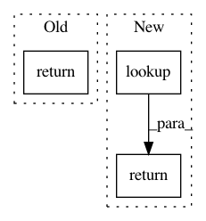

61613b27b92aef20d87c881cfc7451e2b942df00,python/mead/tf/exporters.py,TaggerTensorFlowExporter,_create_model,#TaggerTensorFlowExporter#Any#Any#,151
Before Change
model = load_tagger_model(basename, sess=sess, **kwargs)
softmax_output = tf.nn.softmax(model.probs)
values, indices = tf.nn.top_k(softmax_output, 1)
return model, model.best, values
def _create_rpc_call(self, sess, basename):
model, classes, values = self._create_model(sess, basename)
After Change
list_of_labels[idval] = label
class_tensor = tf.constant(list_of_labels)
table = tf.contrib.lookup.index_to_string_table_from_tensor(class_tensor)
classes = table.lookup(tf.to_int64(indices))
return model, classes, values
else:
return model, indices, values
def _create_rpc_call(self, sess, basename, **kwargs):
In pattern: SUPERPATTERN
Frequency: 4
Non-data size: 3
Instances
Project Name: dpressel/mead-baseline
Commit Name: 61613b27b92aef20d87c881cfc7451e2b942df00
Time: 2019-03-07
Author: sagnik1987@gmail.com
File Name: python/mead/tf/exporters.py
Class Name: TaggerTensorFlowExporter
Method Name: _create_model
Project Name: akkana/scripts
Commit Name: b875155f35702c6f849a0c656078ca64182277a8
Time: 2018-04-27
Author: akkana@shallowsky.com
File Name: analemma.py
Class Name:
Method Name: observer_for_city
Project Name: OpenNMT/OpenNMT-tf
Commit Name: ecbd2cf0e7eb922e27b2372ad5951c5fe06cc90d
Time: 2017-10-10
Author: guillaume.klein@systrangroup.com
File Name: opennmt/models/sequence_classifier.py
Class Name: SequenceClassifier
Method Name: _build
Project Name: HyperGAN/HyperGAN
Commit Name: 36e713ec5ec012558b88056596f465d1ead21e21
Time: 2018-07-24
Author: mikkel@255bits.com
File Name: hypergan/encoders/uniform_encoder.py
Class Name: UniformEncoder
Method Name: lookup